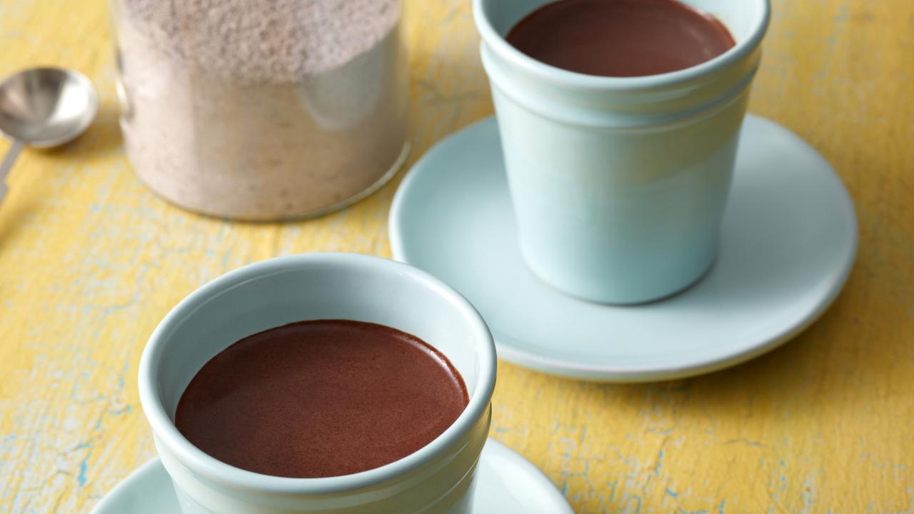

Hot Cocoa

Description
Alton Brown's recipe for homemade hot cocoa.
Ingredients
- 2 cups powdered sugar
- 1 cup cocoa (Dutch-process preferred)
- 2 1/2 cups powdered milk
- 1 teaspoon salt
- 2 teaspoons cornstarch
- 1 pinch of cayenne pepper
- 4-6 cups hot water
Directions
- Combine all ingredients in a mixing bowl and incorporate evenly. Meanwhile in a small pot, heat 4 to 6 cups of water.
- Fill your mug half full with the mixture and pour in hot water. Stir to combine. Seal the rest in an airtight container, keeps indefinitely in the pantry. This also works great with warm milk.